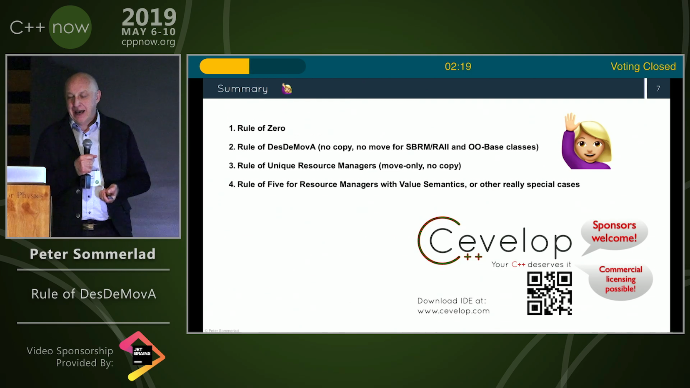
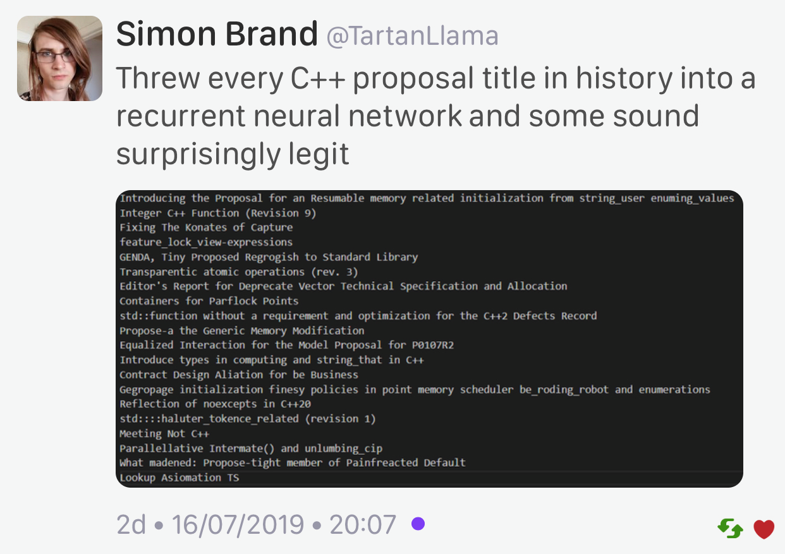

2019-08-22
http://www.open-std.org/jtc1/sc22/wg21/docs/papers/2019/#mailing2019-08
Arthur O'Dwyer https://quuxplusone.github.io/blog/2019/08/18/post-cologne-mailing/
https://devblogs.microsoft.com/cppblog/vcpkg-2019-07-update/
https://www.reddit.com/r/cpp/comments/cqta79/vcpkg_201907_update/
Hopefully you will not require specific versions of packages, as the workflow of vcpkg doesn't really support the (very common) scenario well.
https://github.com/an-tao/drogon
Drogon: A C++14/17 based HTTP web application framework running on Linux/macOS/Unix
Blog post by Peter Sommerlad
https://blog.safecpp.com/2019/07/01/initial.html
https://accu.org/content/conf2014/Howard_Hinnant_Accu_2014.pdf
Rule of Zero:
Code that you do not write cannot be wrong.


Article by Anthony Williams
https://www.justsoftwaresolutions.co.uk/cplusplus/strong_typedef.html
https://github.com/anthonywilliams/strong_typedef
using transaction_id =
jss::strong_typedef<struct transaction_tag, std::string>;
bool is_a_foo(transaction_id id)
{
auto &s = id.underlying_value();
return s.find("foo") != s.end();
}https://www.cycfi.com/2019/07/photon-micro-gui/
http://cppcast.com/2019/07/robert-maynard/
http://dominikberner.ch/cmake-interface-lib/
https://github.com/bernedom/SI
Professional CMake: A Practical Guide, 4th ed., CMake 3.15 https://crascit.com/professional-cmake/ $30
This is a C++17 class library for using the Single Instruction Multiple Data (SIMD) instructions in modern microprocessors.
https://www.agner.org/optimize/blog/read.php?i=1013
https://github.com/vectorclass/version2 (Apache 2.0)
Manual https://github.com/vectorclass/manual/blob/master/vcl_manual.pdf
Also known as Golden Master Tests or Snapshot Testing (locking down current behaviour)
https://github.com/aras-p/ClangBuildAnalyzer

